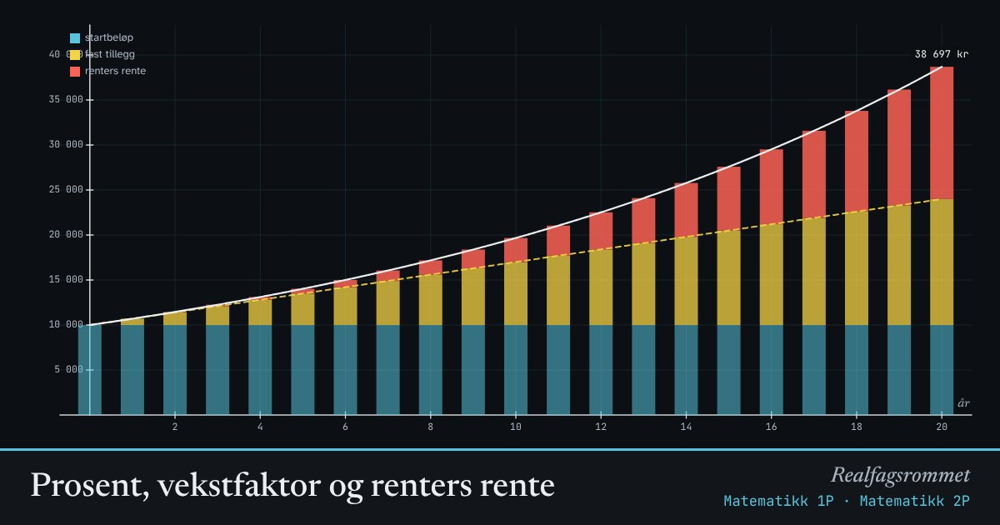

Prosent, vekstfaktor og renters rente
Med fast prosentvis vekst ganger vi med vekstfaktoren hvert år. Renta legger seg på renta fra året før, og det blir mer enn ved et fast tillegg.
Start animasjonen
Formler
Om animasjonen
Hver søyle er beløpet etter et år. Den mørkeblå delen er startbeløpet. Den gule delen er renta du ville fått med et fast tillegg hvert år.
Den røde delen er renters rente: renta du får av renta som allerede er lagt til. Den vokser raskere og raskere.
Er prosenten negativ (verditap), blir vekstfaktoren mindre enn 1, og beløpet minker mot null uten å nå null.
Prøv dette
- Hvor mange år tar det å doble 10 000 kr med 7 % rente? Sammenlign med regelen «70 delt på prosenten».
- Sett prosenten til −15 %. Hvor mye er en bil til 300 000 kr verdt etter 5 år?
- Hvorfor er en økning på 10 % etterfulgt av en nedgang på 10 % ikke det samme som ingen endring?
- Finn vekstfaktoren når en pris øker med 2,5 %.
Kompetansemål
- Matematikk 1P: Prosent, prosentpoeng og vekstfaktor
- Matematikk 1P: Økonomi: sparing, lån og renter
- Matematikk 2P: Eksponentiell vekst og vekstfaktor